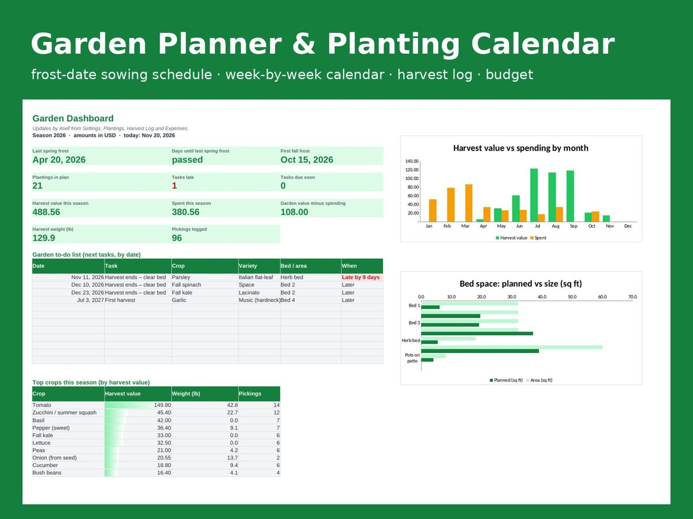

Garden Planner & Planting Calendar (Frost Date Sowing Schedule, Harvest Log, Garden Budget) – Excel & Google Sheets
Plan your vegetable garden around your own frost dates. Type your last spring and first fall frost date once, pick your crops, and the planner works out when to start seeds indoors, when to plant out or sow, and when to expect a harvest – then shows the whole season on a week-by-week calendar and keeps a to-do list of what is due next.
Get it on Gumroad – US$14, one-time
What's inside
- Plant library with 43 vegetables, herbs and flowers: start-indoors, transplant and direct-sow timing, days to harvest, spacing – fully editable
- Plantings plan (150 rows): crop, variety, bed, method and quantity → start date, plant-out/sow date, harvest window and space needed
- Succession sowing: shift any planting by a few weeks, or type your own date
- Week-by-week planting calendar for the whole year with colour codes (start indoors, plant out, direct sow, harvest)
- To-do list on the dashboard sorted by date, with late tasks in red
- Bed planner: size of each bed vs space planned
- Harvest log with shop-price value, plus a garden expense tracker – see what your garden really saves you
- Season summary per month and per crop, top crops and charts
- Blank copy plus a sample copy with a full season
How it works
- Open the file in Excel, or upload it to Google Drive and open with Google Sheets.
- Read the "Start Here" tab (2 minutes). Yellow cells are yours to fill in, grey cells calculate by themselves.
- Type your own numbers; the dashboard, charts and alerts update as you go.
Questions
Does it work in Google Sheets?Yes. Upload the .xlsx file to Google Drive, open it with Google Sheets, and all formulas, drop-down lists and conditional formatting keep working. No macros are used.
Which Excel versions are supported?Excel 2010 or newer on Windows and Mac, including Microsoft 365. Numbers on iPad/Mac and LibreOffice also open it, with small cosmetic differences.
What do I get after paying?An instant download of a ZIP with two files: a blank copy ready for your numbers and a copy filled with sample data so you can see how every sheet works. Start on the "Start Here" tab.
Can I use my own currency?Yes. Pick the currency symbol once in Settings and every sheet follows.
What if it is not for me?Email within 14 days and you get a refund.